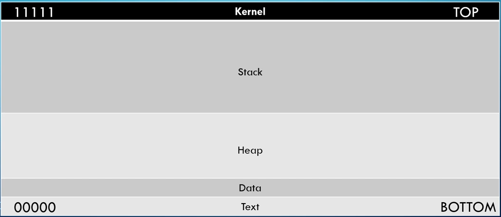

If we dive in to the anatomy of the memory then
ANATOMY OF MEMORY

Now if we only see the anatomy of stack
ANATOMY OF STACK

If we send the bunch of characters to Buffer space then it should stop as it reached EBP border

But in case of buffer overflow attack we oweflow the Buffer space and reach EIP

Now EIP returns address so we can use this to point to anything we want and return its address this way we can get revese shell
Steps to Conduct A Buffer overflow
1) Spiking Method to find vulnerable part of program
2) Fuzzing Sending bunch of character to check if we can break program
3) Finding the offset To find where we break the program
4) Overwritting the EIP We use the offset to overwrite the EIP
5) Finding Bad character
6) Finding the right module
7) Generating Shellcode From 5 and 6 we'll generate shell code
8) Gain root Point EIP to shellcode to get root